Nonlinear dynamics with neural networks
Preliminary Examination
Nonlinear Artificial Intelligence Laboratory, North Carolina State University
2024-04-22
Motivation
Motivation: Why Neural Networks?
- The preeminent computational tool of the contemporary world.
- Differentable, optimizable, and scalable.
- Emergent uses in and out of Physics1.

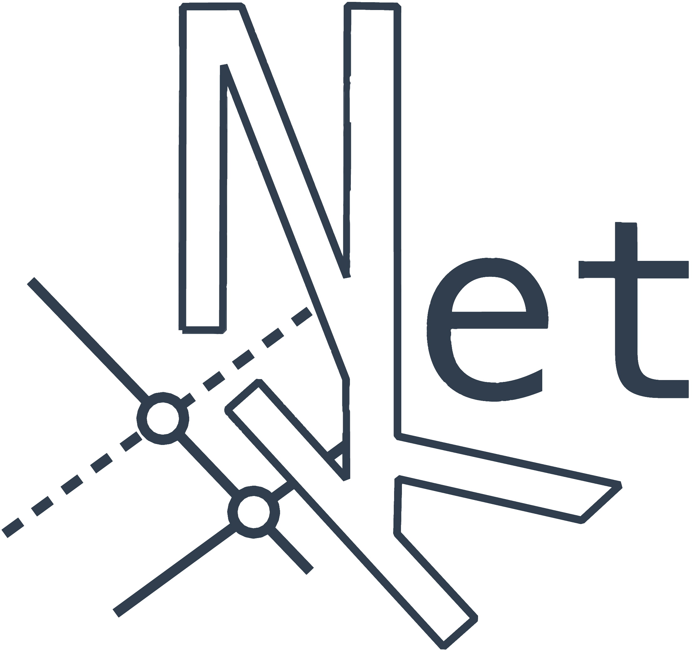
Motivation: Why Nonlinear Dynamics?
- Captures complexity.
- Formal, well established framework.
- Emergent uses in and out of Physics.
Animation by Wliiam Gilpin
Motivation: Why Nonlinear Dynamics for Neural Networks?
- Optimization is inescapably nonlinear2.
- Neural networks are inherently nonlinear.
- Scope of nonlinearities in neural networks is underexplored.
Trainability fractal by Jascha Sohl-Dickstein
Motivation: Why Neural Networks for Nonlinear Dynamics?
- Nonlinear dynamical systems are computationally expensive to solve.
- Paradigm of solution as an element of a distribution translates naturally to neural networks.
- Data-driven methods accommodate realistic complexity.
Neural Networks and optimization
Background: Differentiable Computing
- Paradigm where programs can be differentiated end-to-end automatically, enabling optimization of parameters of the program3.
- Techniques to differentiate through complex programs is more than just deep learning.
- Can be interpreted probabilistically or as a dynamical system. 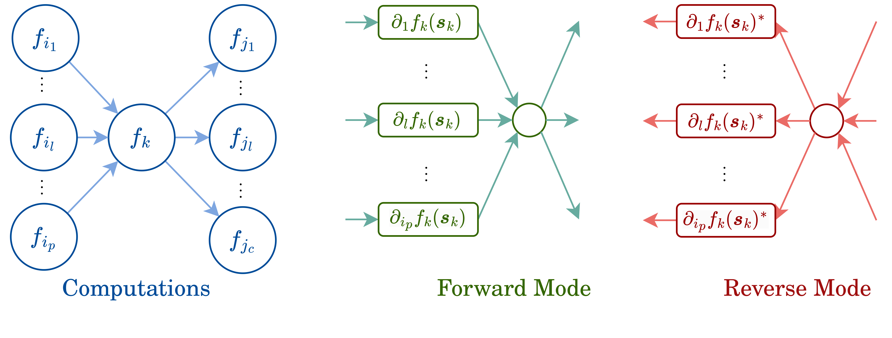
Background: Neural Networks
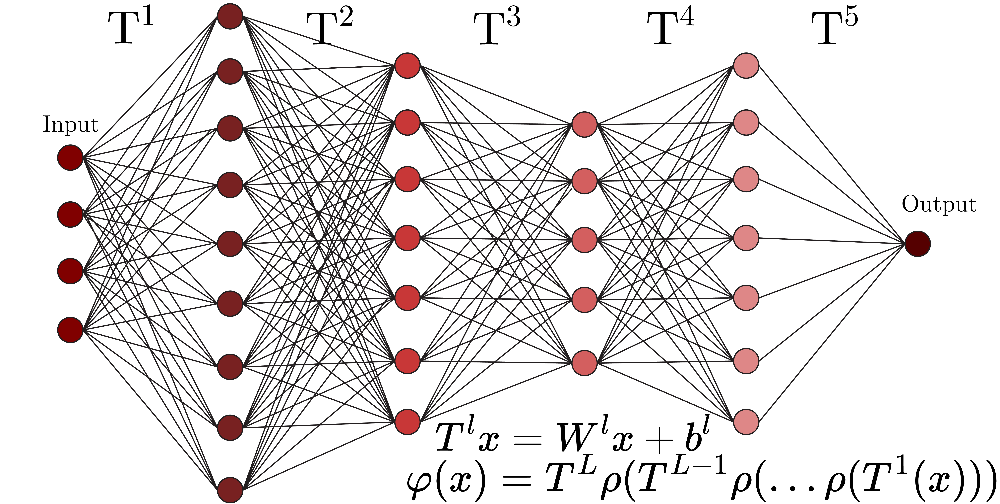\[ \newcommand{\defeq}{\mathrel{\mathop:}=} \newcommand{\R}{\mathbb{R}} \newcommand{\Param}{\theta} \newcommand{\Loss}{\mathcal{L}} \]
\[\varphi: \R^d \rightarrow \R^N_L \qquad T^l: \R^{N_{l-1}}\rightarrow \R^{N_{l}} \qquad \sigma: \R\rightarrow \R\] \[x \in \R^d \qquad W^l \in \R^{N_l\times N_{l-1}} \qquad b^l \in \R^{N_l}\]
Background: Backpropagation
Consider a differentiable loss function \(\Loss\),
\[ \begin{eqnarray*} \delta^L =& \nabla_{\varphi}\Loss\odot\sigma'(T^L)\\ \delta^l =& ((w^{l+1})^\intercal \delta^{l+1} ))\odot\sigma'(T^l)\\ \dfrac{\partial \Loss}{\partial b^l_j} =& \delta_j^l \\ \dfrac{\partial \Loss}{\partial w^l_{jk}} =& T^{l-1}_k\delta_j^l \\ \end{eqnarray*} \]
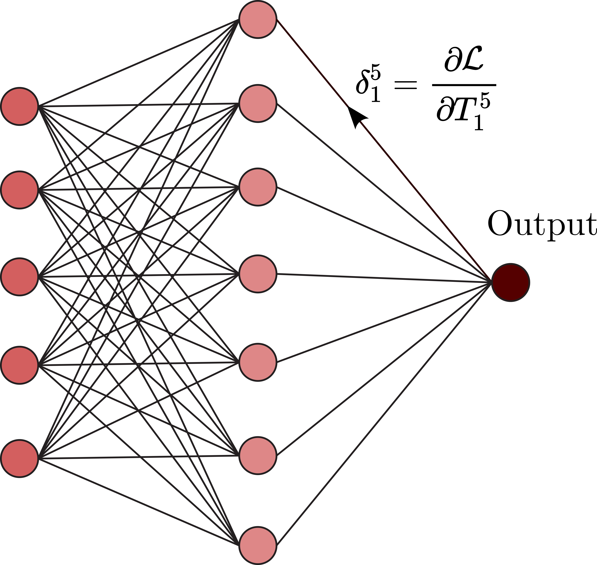
The tunable parameters can then be updated by: \(\Param\gets \Param -\eta \nabla_{\Param}\Loss\)
Background: Loss Functions
- Neural networks compute a probability distribution on the data space.
- Our objective is maximize the likihood the assigned to emperical data.
- Constructing a suitable differentiable loss function gives the path to optimization of a neural network. Common loss functions include:
- Mean Squared Error \(\Loss(\theta) = \sum_{i=1}^N (y_i - f(x_i;\theta))^2\)
- Cross Entropy \(\Loss(\theta) = -\sum_{i=1}^N y_i \log(f(x_i;\theta))\)
- Kullback-Leibler Divergence \(\Loss(\theta) = \sum_{i=1}^N y_i \log\left(\dfrac{y_i}{f(x_i;\theta)}\right)\)
Loss functions are combined and regularized to balance the tradeoff between model complexity and data fit.
Background: Optimization
- To find the best model parametrization, we minimize the loss function with respect to the model parameters.
- That is we compute, \(\mathcal{L^\star} \defeq \inf_{\theta \in \Theta} \Loss(\theta)\) assuming an infimum exists.
- To converge to a minima the optimizer needs an oracle \(\mathcal{O}\), i.e. evaluation of the Loss function, its gradients, or higher order derivatives. Then, for an algortihm \(\mathcal{A}\), \[ \theta ^ {t+1} \defeq \mathcal{A}(\theta ^ 0, \ldots, \theta ^ t, \mathcal{O}(\theta ^ 0), \ldots, \mathcal{O}(\theta ^ t), \lambda), \] where \(\lambda \in \Lambda\) is a hyperparameter.
Stochastic Gradient Descent, Adam, and RMSProp are common optimization algorithms for training neural networks.
Background: Meta-Learning
- Improve the learning algorithm itself given the experience of mutiple learning episodes.
- Base learning: an inner learning algorithm solves a task defined by a dataset and objective.
- Meta-learning: an outer algorithm updates the inner learning algorithm.
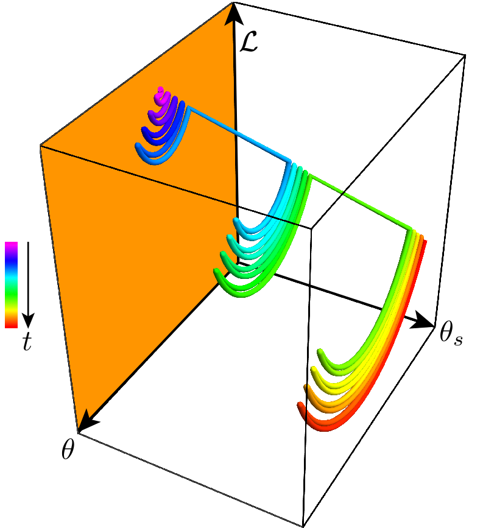
Algorithms for meta-learning are still in a nascent stage with significant computational overhead.
Figure by Dr. John Lindner
Background: Physics-Informed Neural Networks(PiNNs)
- Synthesyzing data with differential equation constraints.
- Physics as a weak constraint in a composite loss function or a hard constraint with architectural choices.
- Symplectic constraints to the loss function gives Hamiltonian Neural Networks4.
Background: Coordinates matter
Neural networks are coordinate dependent. The choice of coordinates can significantly affect the performance of the network.
Adapted from Heliocentrism and Geocentrism by Malin Christersson
Metalearning Activation functions
(Published, US and International Patent Pending)Foundation
- Most complex systems showcase diversity in populations.
- Artificial neural network architectures are traditionally layerwise-homogenous
- Will neurons diversify if given the opportunity?
Insight
- Activation functions can themselves be modeled as neural networks.
- Activation function subnetworks are optimizable via metalearning.
- Multiple subnetwork initializations allow the activations to diversify and evolve into different communities.

Figure from Publication
Methodology
- Developed a metalearning framework to optimize activation functions.
- Tested the algorithm on classification and regression tasks for conventional and physics-informed neural networks.
- Showed a regime where learned diverse activations are superior.
- Gave preliminary analysis to support diversity in activation functions improving performance.
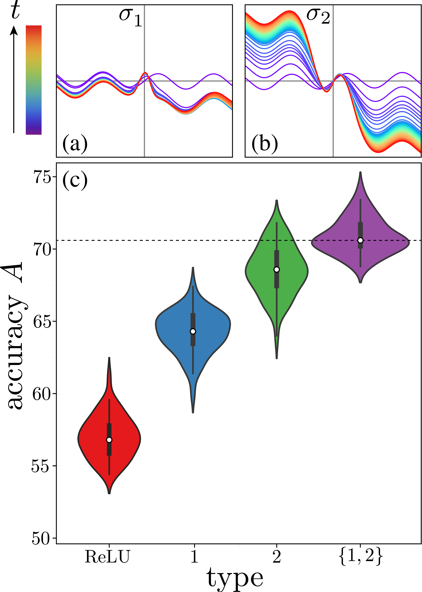
Figure from Publication
Results: Scaling
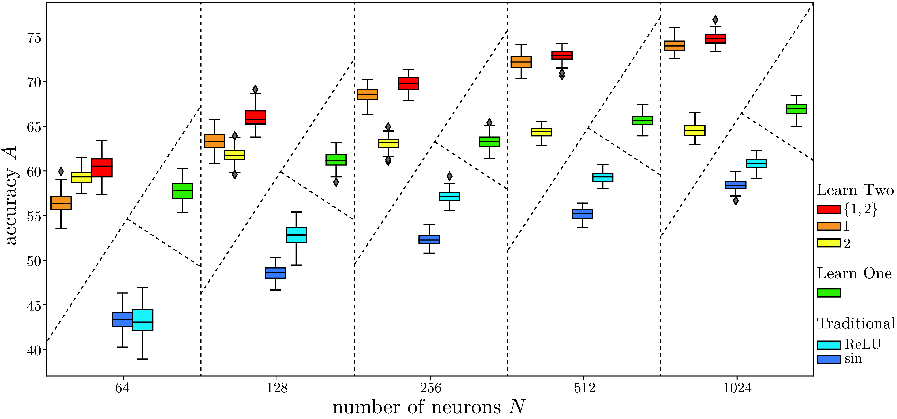Figure from Publication
Results: Real World Data

Figure from Publication
Analysis: Participation Ratio
Estimate change in dimensionality of network activations
\[ Nr = \mathcal{R} = \frac{(\operatorname{tr}{\bf C})^2}{\operatorname{tr}{\bf C}^2} = \frac{\left(\sum_{n=1}^N\lambda_n \right)^2}{\sum_{n=1}^N \lambda_n^2} \]
where \(\lambda_n\) are the co-variance matrix \(\bf C\)’s eigenvalues for neuronal activity data matrix. The normalized participation ratio \(r = \mathcal{R} / N\)5.
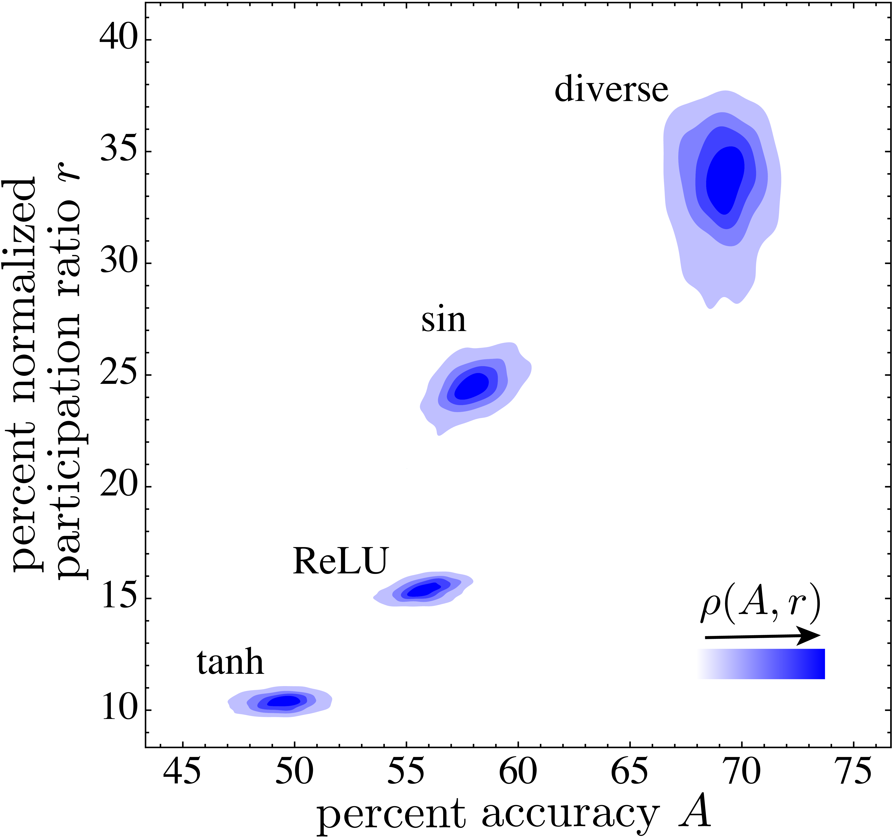
Diverse activation functions use more of the network’s capacity.
Figure from Publication
Conclusions
- Learned Diversity Networks discover sets of activation functions that can outperform traditional activations.
- These networks excel in the regime of low data few shot learning.
- Due to the nature of metalearning, the memory overhead is significant concern for scaling.
Speculations: Achieving stable minima

Optimization of a neural network with shuffled data is a noisy descent.
This can be modeled with the Langevin equation:
\[ \DeclareMathOperator{\Tr}{Tr} d\theta_{t} = - \nabla \Loss(\theta_{t})\, dt + \sqrt{2\mathbf{D}} \cdot d\mathcal{W}_{t} \] with noise intensity \(\mathbf{D} = (\eta / B) \Loss(\theta) \mathbf{H}(\theta\star)\)6
Speculations: Structure and universality to diverse activations
- Learned activation functions appear qualitatively independent of the base activation function.
- The odd and even nature of the learned functions suggest that the network is learning to span the space of possible activation functions.

Control and Chaos
Background: Hamilton Jacobi Bellman(HJB) Equation
Extension of Hamilton Jacobi equation/ Continous time analog of Dynamic Programming.
\[ \dfrac{dx}{dt} = f(x(t),u(t))dt \\ J(x,u,t_0,t_f) = Q(x(t_f), t_f) + \int_{t_0}^{t_f} \Loss(x(\tau),u(\tau))d\tau\\ V(x(t_0),t_0,t_f) = \min_{u(t)} J(x(t_0),u(t),t_0,t_f)\\ -\dfrac{\partial V}{\partial t} = \min_{u(t)} \left[ \Loss(x(t),u(t)) + \dfrac{\partial V}{\partial x}^T f(x(t),u(t)) \right] \]
Background: Model Predictive Control
Control scheme where a model is used for predicting the future behavior of the system over finite time window7.
| 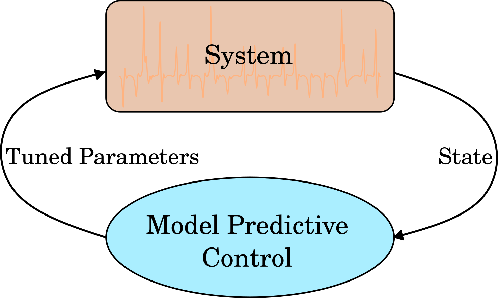 |
Animations from do-mpc documentation
Background: Chaos
Let \(X\) be a metric space. A continous map \(f: X \rightarrow X\) is said to be chaotic on \(X\) if:
|
Background: Traditional Chaos Control
Relies on the ergodicity of chaotic systems9,10.
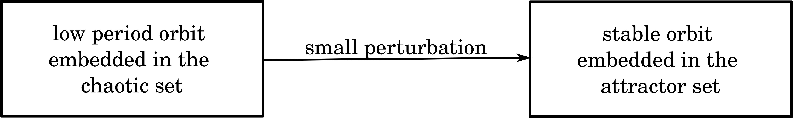
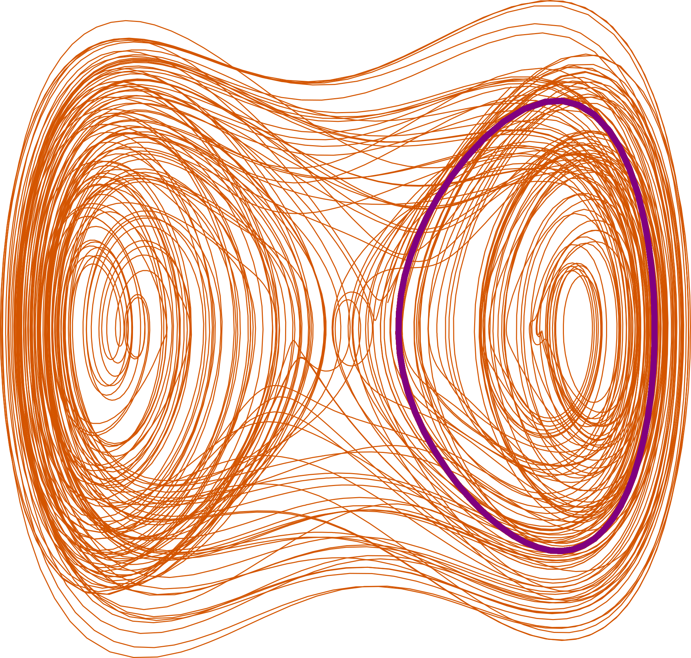
Background: Chaotic Pendulum Array11
\[ l_n^2\ddot\theta_n =-\gamma\dot\theta_n\nonumber-l_n\sin{\theta_n}\nonumber +\tau_{0}+\tau_{1}\sin{\omega t}\nonumber +\kappa(\theta_{n-1}+\theta_{n+1}-2\theta_n) \]
Background: Kuramoto Oscillator12
| \[\dot{\theta}_i = \omega_i + \lambda\sum_{j=1}^N \sin(\theta_j - \theta_i)\] |
Synchronizing fireflies video from Robin Meier
Neural Network control of chaos
Insight
- Optimal control of network dynamics involves minimizing a cost functional.
- Traditional control approaches like Pontryagin’s maximum principle or Hamilton-Jacobi-Bellman equations are analytically and computationally intractable for complex systems.
- Neural networks based on neural ODES can approximate the optimal control policy13.
Methodology
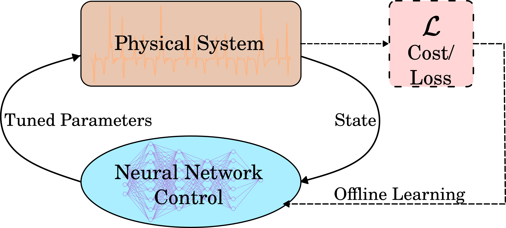Results: Kuramoto Grid

Results: Pendulum Array

Future Work: Exotic Dynamics14
\[\dot{\theta}_i = \omega_i + \lambda\sum_{j=1}^N A_{ij}\sin(\theta_j - \theta_i-\alpha)\]
Future Work: Recurrence matrices in \(\mathcal{L}\)15
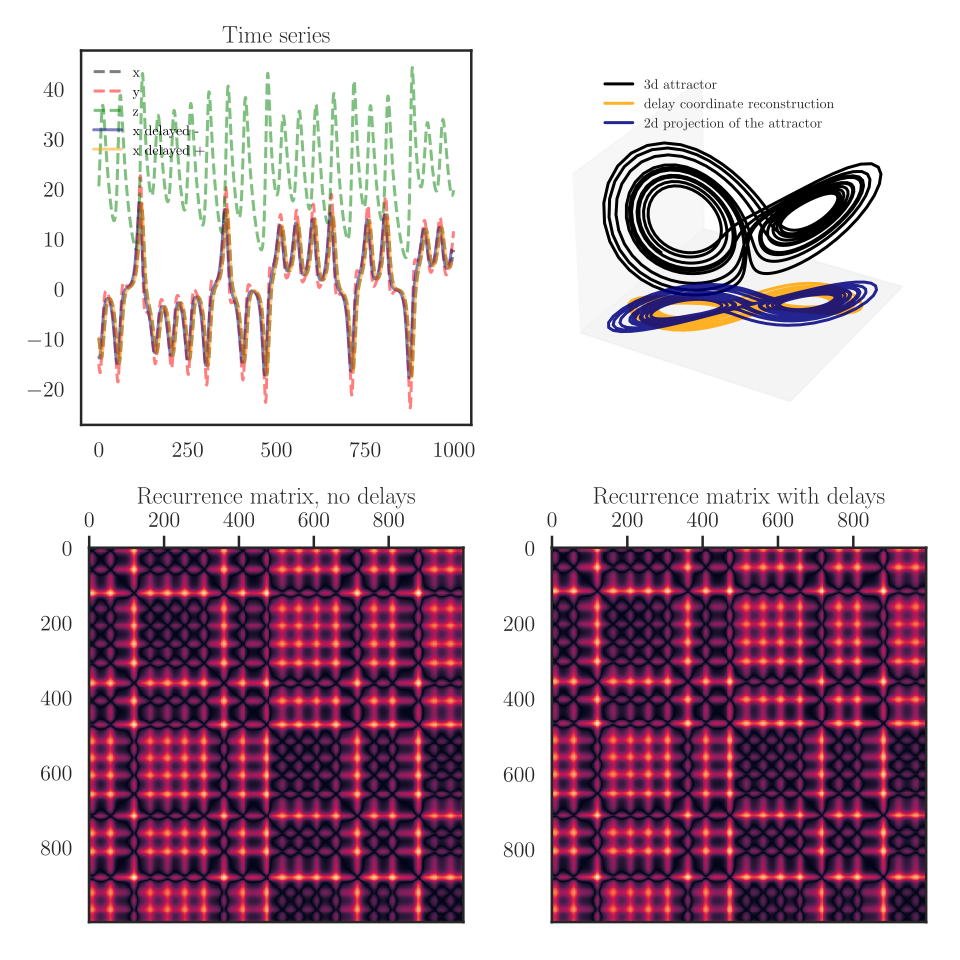Dynamics, symmetries, and introspection
Background: Group theory for Dynamical Systems
Let \(\Gamma\) act on \(\mathbb{R}^n\) and \(f: \mathbb{R}^n \rightarrow \mathbb{R}^m\) . Then \(f\) is said to be \(\Gamma\)-equivariant if \(f(\gamma x) = \gamma f(x)\) for all \(x \in \mathbb{R}^n\) and \(\gamma \in \Gamma\)16.
For dynamical systems, for a fixed point \(f(x\star)=0\) and \(\gamma x\star\) is a fixed point as well.
Isotropy subgroup: Let \(v\in \mathbb{R}^n: \Sigma_v = \{\gamma \in \Gamma: \gamma v = v\}\)
Fixed pt subspace: Let \(\Sigma \subseteq \Gamma\). \(\text{Fix}(\Sigma)=\{v \in \mathbb{R}^n:\sigma v=v\}\)
Thm: Let \(f: \mathbb{R}^n \rightarrow \mathbb{R}^m\) be a \(\Gamma\)-equivariant map and \(\Sigma \subseteq \Gamma\). Then \(f(\text{Fix}(\Sigma))\subseteq\text{Fix}(\Sigma)\).
Background: Group Equivariant Neural Networks
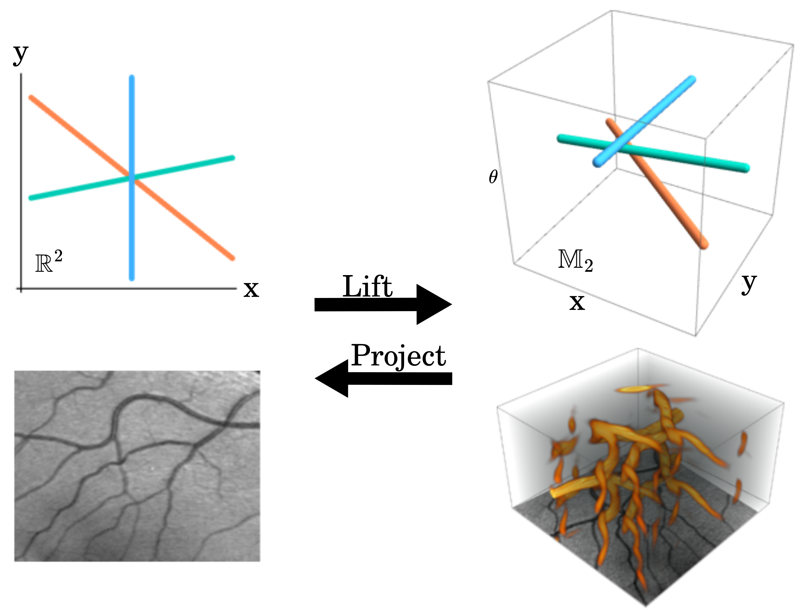
Group equivariant NN work through lifting convolutions to the group space, and then projecting back to the original space17.
Figure adapted from Bart Smets et al.
Symmetries of controllers
Insight
- Dynamical systems often obey symmetries.
- Controllers are essentially dynamical systems.
- Is there a computationally viable mapping between the symmetries of the system and the controller?
Methodology
- Analyze the controllers from the previous sections for symmetries using group equivariant autoencoders
- Construct controllers that respect the symmetries of the system
- Compare the performance of symmetric to conventional controllers.
Expectation
- Viability test for group equivariant neural networks in control systems.
- Mapping between the symmetries of the system and the controller.
- Performance analysis of symmetric controllers.
Conclusion
Summary
Deliverables
Acknowledgements
Background image from Jacqueline Doan
References
Backup slides
Universal approximation theorem
\[M(\sigma) = \text{span}\{\sigma(wx-\theta):w\in \mathbb{R}^n, \theta\in\mathbb{R}\}\]
Theorem 1: Let \(\sigma \in C(\mathbb{R})\). Then \(M(\sigma)\) is dense in \(C(\mathbb{R}^n)\), in the topology of uniform convergence on compacta, if and only if \(\sigma\) is not a polynomial18.
For Neural Networks,
Theorem 2: Let \(\sigma\) be any continous sigmoidal function. Then finite sums of the form \(G(x) = \sum_{i=1}^N \alpha_i \sigma(w_i^T x + b_i)\) are dense in \(C(I_n)\). i.e. \(\forall f\in C(I_n)\) and \(\epsilon>0\), there is a sum \(G(x)\) such that \(\max_{x\in I_n}|f(x)-G(x)|<\epsilon\)19.
Informally, at least one neural network exists that can approximate any continuous function on \(I_n=[0,1]^n\) with arbitrary precision.
Stochastic gradient descent
Neural ODEs
HJB Derivation Sketch
Bellman optimality equation: \[ V(x(t_0),t_0,t_f) = V(x(t_0),t_0,t) + V(x(t),t,t_f) \] \[ \begin{align*} \dfrac{dV(x(t),t,t_f)}{dt} &= \dfrac{\partial V}{\partial t} + \dfrac{\partial V}{\partial x}^T \frac{dx}{dt}\\ &= \min_{u(t)} \dfrac{d}{dt} \left[ \int_0^{t_f}\Loss(x(\tau),u(\tau))d\tau + Q(x(t_f), t_f) \right]\\ &= \min_{u(t)} \left[ \dfrac{d}{dt}\int_0^{t_f}\Loss(x(\tau),u(\tau))d\tau \right] \\ \end{align*} \]
\[ \implies \boxed{-\dfrac{\partial V}{\partial t} = \min_{u(t)} \left[ \Loss(x(t),u(t)) + \dfrac{\partial V}{\partial x}^T f(x(t),u(t)) \right]} \]